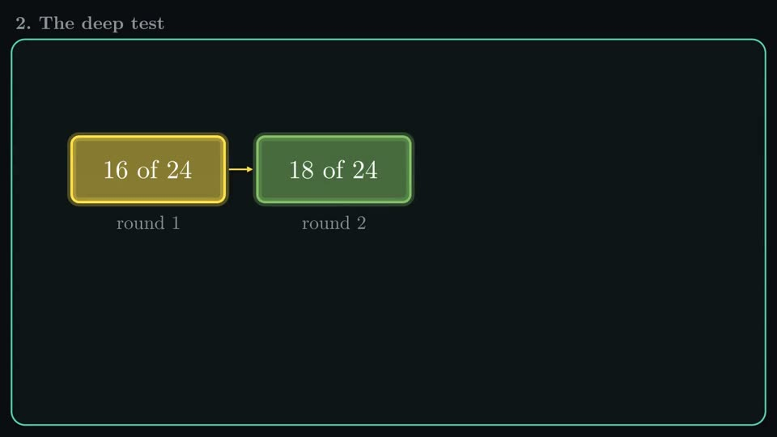

What is computed on this machine, and what of it is published. A workbench, not a portfolio: only what was produced here is listed.

23:16 Newest film · November 2026The updated working station One Clara for phone and terminal, small staged work sessions, two safety doors, nightly tests. 25 clickable chapters. All films and the archive →What is not here. Patient data and results on in-house cohorts stay on the machine. Only work on public datasets is published; the rules are on the page Limits and data rules.
Source